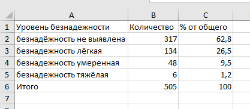
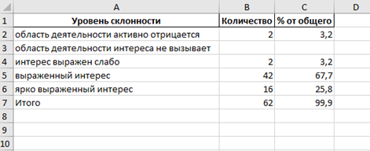
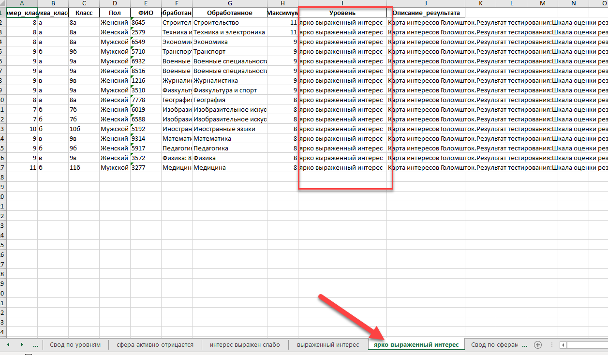
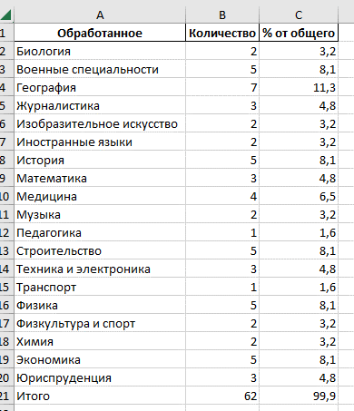
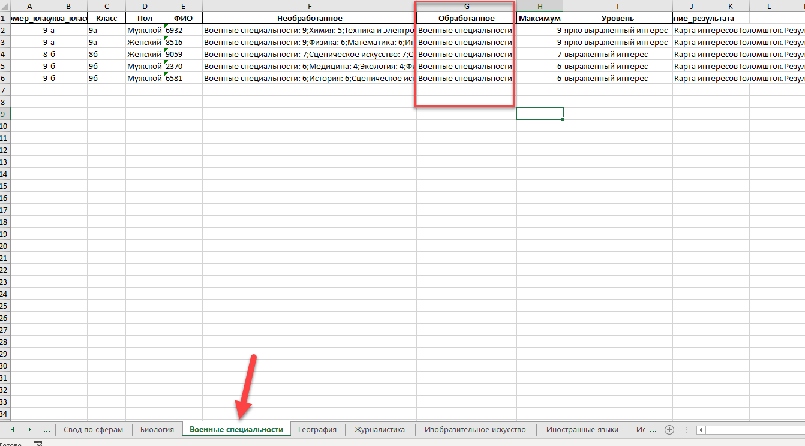
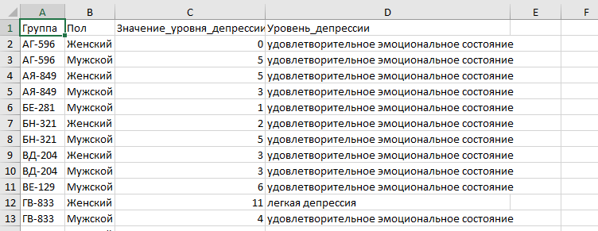
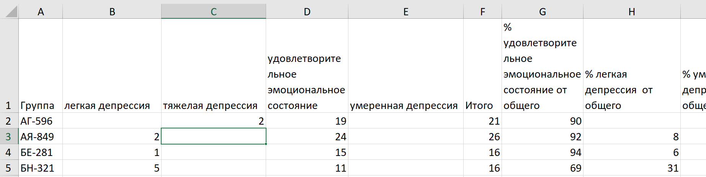
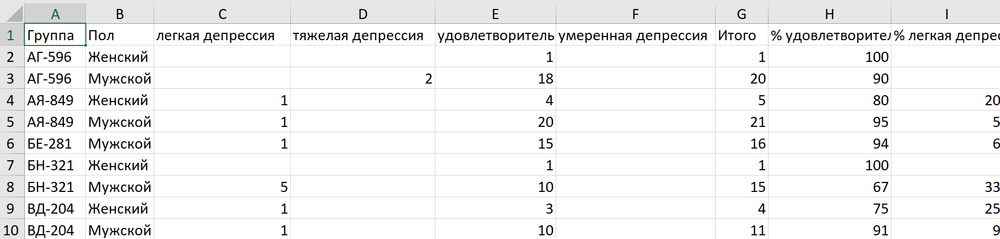

Результаты каждого тестируемого
У каждого прошедшего тестирование будут отображаться численные показатели и уровни шкалы всех тестов использованных при тестировании.

Список тестируемых чьи результаты (в тестах тревожности, депрессии, адаптации, остракизма, выгорания, психоэмоционального состояния) требуют особого внимания
В список попадают все у кого при прохождении следующих тестов:
Профессиональное выгорание педагогов Водопьянова, Эмоциональное выгорание Бойко Ильин, Выгорание Каппони Новак, Профессиональное выгорание Маслач Водопьянова, Эмоциональное выгорание Бойко, BAT краткая версия Демкин, Опросник психологического выгорания Рукавишников, Экспресс-диагностика адаптации первокурсников Гончарова, Самооценка психических состояний Айзенк, Социально-психологическая адаптированность Роджерс Даймонд Снегирева, САН Доскин Мирошников, Индекс общего самочувствия ВОЗ 1999, Шкала тревожности Кондаша Школьники, Шкала тревожности Кондаша Студенты, Шкала депрессии Бека, Шкала безнадежности Бека, Шкала депрессии Цунга, ШНПО ПМ Бойкина, Шкала субъективного остракизма Бойкина, Склонность к девиантному поведению Леус
выявлено минимум одно из следующих состояний -
- высокий уровень выгорания
- имеется выгорание
- критический уровень выгорания
- крайне высокий уровень
- 250-299
- 300 и более
- очень высокий уровень
- низкий уровень адаптации
- выраженная социально-психологическая дезадаптация
- очень высокий уровень тревожности
- тяжелая депрессия
- безнадежность тяжёлая
- истинное депрессивное состояние

Список тестируемых чьи результаты (в тестах тревожности, депрессии, адаптации, остракизма, выгорания, психоэмоционального состояния) находятся в зоне риска
В список попадают все у кого при прохождении следующих тестов:
Профессиональное выгорание педагогов Водопьянова, Эмоциональное выгорание Бойко Ильин, Выгорание Каппони Новак, Профессиональное выгорание Маслач Водопьянова, Эмоциональное выгорание Бойко, BAT краткая версия Демкин, Опросник психологического выгорания Рукавишников, Экспресс-диагностика адаптации первокурсников Гончарова, Самооценка психических состояний Айзенк, Социально-психологическая адаптированность Роджерс Даймонд Снегирева, САН Доскин Мирошников, Индекс общего самочувствия ВОЗ 1999, Шкала тревожности Кондаша Школьники, Шкала тревожности Кондаша Студенты, Шкала депрессии Бека, Шкала безнадежности Бека, Шкала депрессии Цунга, ШНПО ПМ Бойкина, Шкала субъективного остракизма Бойкина, Склонность к девиантному поведению Леус
выявлено минимум два из следующих состояний -
- пограничное выгорание
- симптомы выгорания
- начинающееся выгорание
- средний уровень выгорания
- высокий уровень
- доминирующий симптом
- не благоприятное состояние
- преобладает плохое настроение
- низкий уровень самооценки
- высокий уровень социального остракизма
- легкая степень социально-психологической дезадаптации
- 0-19
- высокий уровень тревожности
- умеренная депрессия
- безнадежность умеренная
- субдепрессивное состояние или маскированная депрессия

Подсчет количества прошедших тестирование по выбранным категориям.
Сколько человек из категории прошло тестирование

Результаты каждого теста по отдельности
Подробные результаты теста с указанием диапазонов нормальности и субшкал отсортированные по убыванию главного показателя.

Ответы каждого теста по отдельности для проверки
Ответы тестируемых преобразованные в числа для проверки правильности работы программы.

Сводная таблица по состояниям
Сколько тестируемых имеет то или иное состояние и процентное соотношение к общему количеству тестируемых.
Сводная таблица по уровням склонности для профориентационных тестов
Сколько тестируемых имеет тот или иной уровень склонности и процентное соотношение к общему количеству тестируемых.
Листы со списками по уровню склонности
На этих листах отображаются тестируемые у которых был обнаружен соответствующий уровень склонности.
Сводная таблица по сферам деятельности к которым склонны тестируемые для профориентационных тестов
Сколько тестируемых имеет склонность к той или иной сфере деятельности и процентное соотношение к общему количеству тестируемых.
Листы со списками по склонности к той или иной сфере
На этих листах отображаются тестируемые у которых была обнаружена склонность к определенной сфере деятельности.
Подсчет среднего значения показателя и уровня шкалы теста в разрезе выбранных категорий(до 3).
Для каждой выбранной категории высчитывается среднее арифметическое значение.

Подсчет среднего значения показателя и уровня шкалы теста в разрезе выбранных категорий(до 3).
Для каждой выбранной категории высчитывается среднее арифметическое значение шкал теста.
Подсчет количества тестируемых по уровням шкалы теста в разрезе выбранных категорий(до 3).
Для каждой выбранной категории подсчитывается сколько раз тот или иной уровень шкалы встречался в указанной категории и процентное соотношение к общему
Подсчет количества тестируемых по уровням шкалы теста в разрезе выбранных категорий(до 3).
Для каждой выбранной категории подсчитывается сколько раз тот или иной уровень шкалы встречался в указанной категории и процентное соотношение к общему
